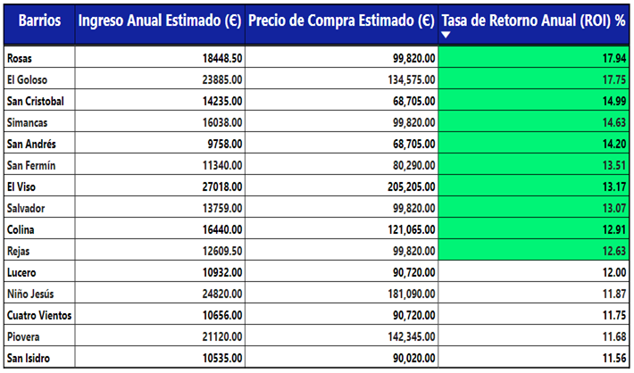
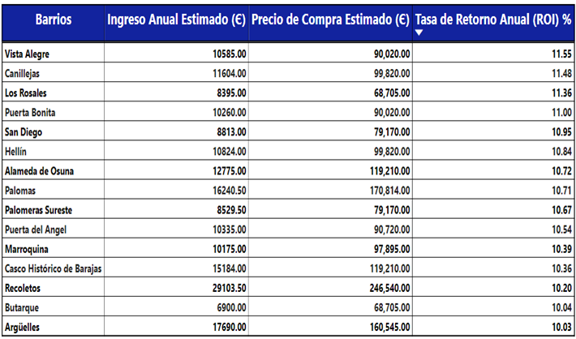
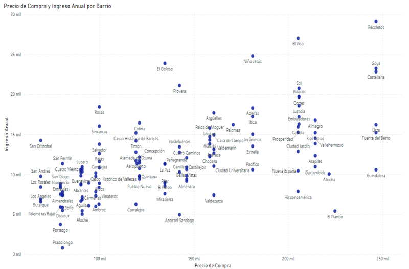
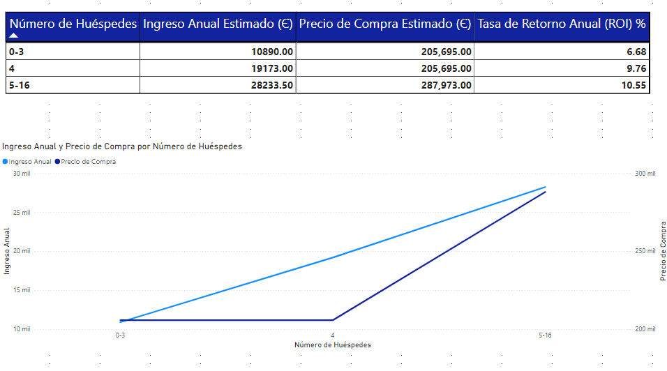
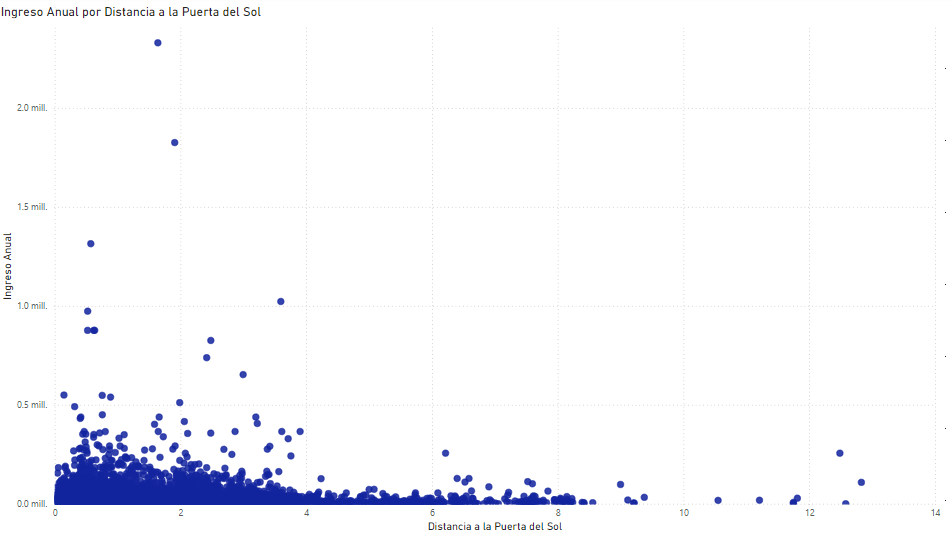
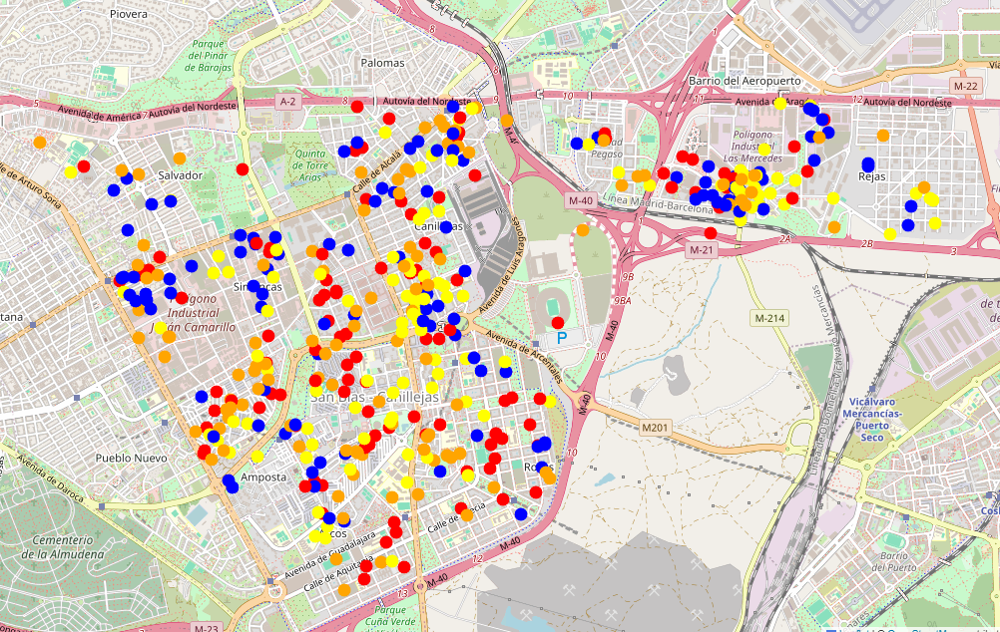

MERCADO INMOBILIARIO
Una empresa enfocada en el sector de bienes raíces ha seleccionado la ciudad de Madrid
como siguiente punto para extender su modelo de negocios, el cual busca invertir en la
compra de inmuebles con el objetivo de obtener rentabilidad mediante alquiler turístico.
Para ello, antes de poner al equipo de valoraciones a indagar oportunidades, la dirección ha
encargado al equipo de Data Science un análisis de Discovery que permita identificar
estrategias o líneas de trabajo que ayuden a dirigir la actuación del equipo de valoraciones.
OBJETIVO DE ANÁLISIS
Analizando las principales fuentes de datos de dominio público (AIRBNB - Idealista), se establecieron los siguientes lineamientos:
- Los patrones (insights) que ayuden a entender el funcionamiento del mercado dentro de la ciudad y guíen el trabajo de búsqueda al equipo de valoraciones.
- Los principales ejes de búsqueda (precio de alquiler, nivel de ocupación y precio de compra).
FUENTES DE INFORMACIÓN
- Inside Airbnb: Base de datos de los inmuebles en Madrid: En el portal web inside Airbnb recolecta los registros históricos de los movimientos realizados en propiedades listadas dentro de la famosa aplicación web de alquiler turístico Airbnb. Para este caso de estudio la información fue asignada con corte a 15 de diciembre de 2023.
- Portal Idealista: Reporte de precios de vivienda en Madrid por metro cuadrado. La página web de idealista almacena información referente al precio por metro cuadrado medio en cada zona de la ciudad de Madrid.
CONCLUSIONES EJECUTIVAS
- SECTORES IDENTIFICADOS: Se encontró que 7 de los 10 barrios con mayor tasa de retorno a la inversión anual muestran un costo de vivienda menor a los cien mil euros (€100,000).
- NÚMERO DE HUESPEDES IDEAL: Es recomendable buscar inmuebles que permitan hospedar idealmente a 4 huéspedes.
- RELEVANCIA DEL PUNTO DE INTERES: Dentro de los barrios recomendados no es necesario priorizar la búsqueda de inmuebles cercanos a posibles sitios de interés.
- NUEVO ENFOQUE DE NEGOCIO Se recomienda evaluar el desarrollo de un nuevo proceso basado en el alquiler para momentos concretos de alto interés deportivo, especialmente en el barrio de San Blas.
DETALLE DE RESULTADOS
SECTORES IDENTIFICADOS
En el marco del estudio realizado se ha identificado 30 barrios que destacan sobre el resto a
la hora de maximizar la relación costo-beneficio en la compra y alquiler de inmuebles.
Estos aunque han sido hallados en todos los sectores de la ciudad, 7 de los 10 barrios
con mayor rentabilidad evidencian un valor de vivienda menor a los cien mil euros (€100,000),
lo que se ve en una rentabilidad accesible a un nivel de inversión relativamente bajo.
CUADRO 1. TASA DE RETORNO POR BARRIOS.


CUADRO 2. GRÁFICO DE DISPERSIÓN POR BARRIOS.

NÚMERO IDEAL DE HUÉSPEDES
Analizando la información presentada se puede observar un patrón que determina que las ganancias por alquiler son máximas cuando se hospedan 4 huéspedes en un inmueble. Esto se debe a que el valor de compra de un inmueble se mantiene estable cuando se trata de inmuebles que permitan hospedar de 1-4 personas, mientras que el valor de alquiler se ve en aumento siempre que haya más personas hospedándose en el sitio.
CUADRO 3. ANÁLISIS POR NÚMERO DE HUÉSPEDES

RELEVANCIA DEL PUNTO DE INTERES
Para este estudio se decidió considerar el nivel de influencia que pudiera tener la Puerta del Sol en la relación de precio de compra y alquiler de los inmuebles. Al parecer la cercanía de un punto a este sitio turístico no influye de gran manera en los precios de alquiler pero sí lo hace en los precios de compra de un inmueble, por lo que al presentar un menor coste de adquisición, se recomienda buscar sitios no tan cercanos a la Puerta del Sol dentro de los barrios de búsqueda prioritaria previamente mencionados.
CUADRO 4. CUADRO DE DISPERSIÓN - PUERTA DEL SOL

NUEVO ENFOQUE DE NEGOCIO
En el mercado se puede observar un apartado en el cual los valores de alquiler para
apartamentos o habitaciones crece exponencialmente en sectores cercanos a escenarios
deportivos dentro de un rango de fechas específicas.
Para este caso de estudio se analizo dicho comportamiento para inmuebles encontrados en el
distrito de San Blas – Canillejas, que cuyas inmediaciones se encuentran relativamente cerca
al estadio Wanda Metropolitano. El precio de alquiler se ve incrementado pero los precios de
compra en el inmueble todavía no se han ajustado para este tipo de oportunidades, por lo que
es un escenario ideal para invertir y sacar el máximo redito posible.
A continuación se muestra las unidades encontradas en el distrito San Blas - Canillejas, delimitadas por color a partir del ingreso anual que estas generan. Se puede visualizar a detalle una cantidad considerable de unidades representadas en azul y rojo (ingresos mayores a la media), lo que ilustra de manera clara el marco de oportunidad presentado.
CUADRO 5. MAPA DE PUNTOS - DISTRITO DE SAN BLAS - CANILLEJAS

Disclaimer: El proyecto utiliza datos obtenidos del medio, sin embargo este fue realizado con fines educativo y no debe ser tenido en cuenta para un cuadro de decisión real.